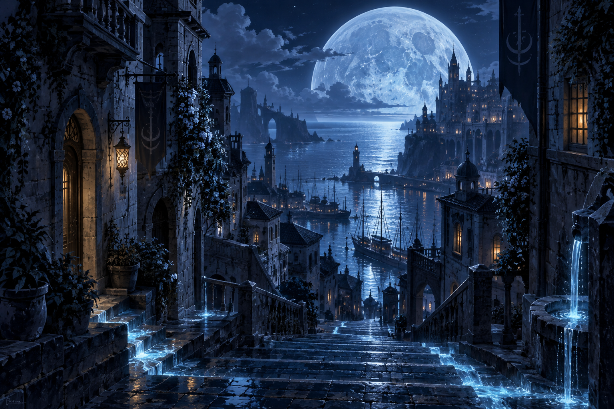
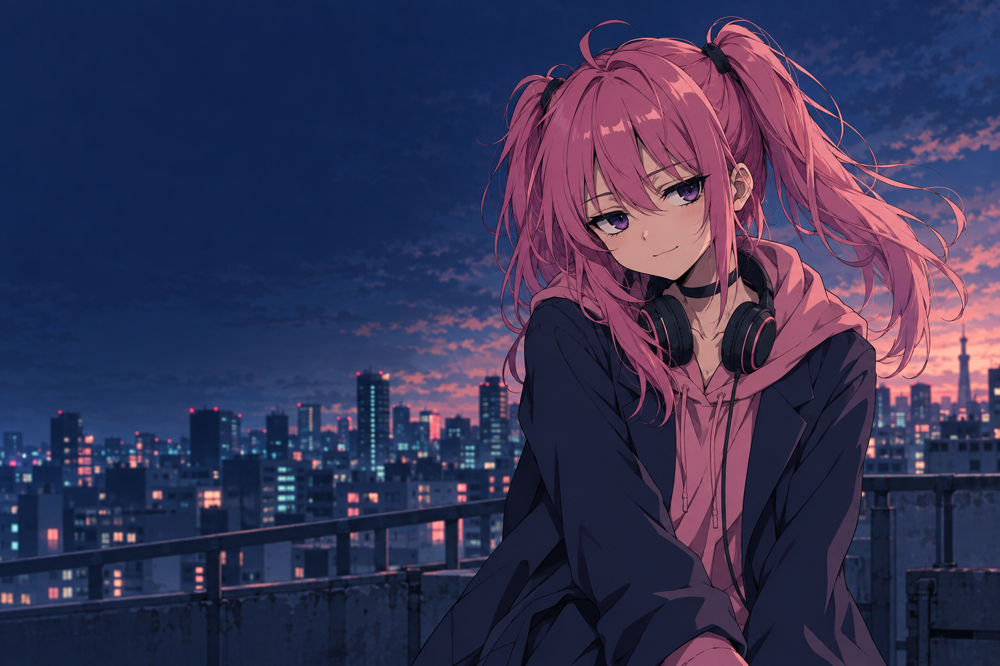

FICTION / ONGOING
WORDS, WORLDS & LITTLE SPARKS.鐘々崎ルカの創作室
鐘々崎ルカSCROLL TO EXPLORE
01 / SELECTED WORKS
つくったもの。
つくっているもの。
物語も、日々の気づきも。
それぞれの入口から、どうぞ。
「名もない花」
には、そろそろ
名前があって良い。
02
ESSAY
名もない花にはそろそろ名前があって良い
AFTER HOURS.
03
CHARACTER / VISUAL
鐘々崎ルカのビジュアル
02 / ABOUT ME
A LITTLE CURIOUS.A LITTLE CONTRARY.
KANEGASAKI LUCA
鐘々崎ルカかねがさき るか
日々の小さなきらめきに、
つい、寄り道してしまう。
物語を書いたり、ことばの引っかかりを考えたり。
キャラクターやWebの表現にも、好奇心のままに手を伸ばしています。
見慣れたものでも、名前を知ると見え方が変わる。
そんな発見を、次につくるものへつなげていきたい。
物語ことばビジュアルWeb
03 / BEHIND THE WORKS
作品のそばにある話。
FICTION方舟に海はいらない
兄のブレンと、妹のティア。宿屋で働く二人の日常は、「逆潮」を境に動き出す。
ブレンが選ぶのは、ティアを守ること。方舟の欠片をめぐる旅と、潮が支配する世界を描く長編小説を執筆しています。
ESSAY名もない花にはそろそろ名前があって良い
歌詞に出てくる「名もない花」。何度も歌われているのに、いつまでも名前をもらえないのは、ちょっと気になる。
そんな小さな引っかかりから、花に名前をつけてみる。よく知っていることばを、少し違う角度から眺めるエッセイです。
VISUAL鐘々崎ルカのビジュアル
くすみピンクの髪と、少し気だるげな表情。チョーカーと音楽をそばに、ルカらしい佇まいを探しています。
このサイトのキービジュアルは、キャラクター設定をもとに画像生成で制作した、新しい一枚です。